Es basa en la col·locació d'elements rígids, no col·locats directament sobre el conductor, amb tancament total o parcial, però que impedeixen la introducció de parts del cos. Exemples d'aquestes proteccions són les caixes d'interruptors, armaris per a maniobres, caixes de derivació, etc.
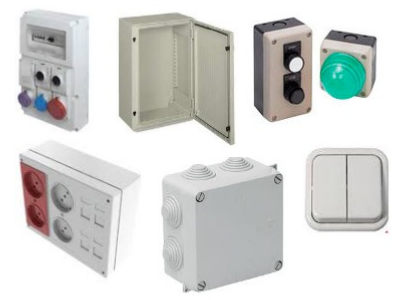
Les "envolvents" dels equips elèctrics constitueixen un element preventiu important perquè garanteixen un grau de protecció contra contactes elèctrics directes de les persones i, al mateix temps, una protecció del mateix equip contra la penetració d'agents ambientals sòlids i líquids (CODI IP).
CODI IP
El codi IP vol dir "International Protection". Aquest codi permet descriure els graus de protecció proporcionats per les "envolvents" contra la penetració de cossos sòlids estranys i contra els efectes nocius del aigua, per mitjà de dues xifres:
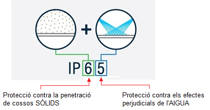
El nombre que va en primer lloc indica la protecció de les persones limitant o impedint la penetració d'una part del cos humà o d'un objecte agafat per la persona garantint també la protecció de l'equip contra la penetració de cossos sòlids estranys. La primera xifra està graduada des de "0" fins "6" i a mesura que va augmentant el valor, el cos sòlid que penetra és menys gran. El nombre que va en segon lloc indica la protecció de l'equip contra els efectes perjudicials de l'aigua. La segona xifra està graduada des de"0" fins "8" i a mesura que va augmentant el valor de la xifra la quantitat d'aigua que intenta penetrar és més gran i es projecta en més direccions.
1ª Xifra CODI IP: Significat
IP0X
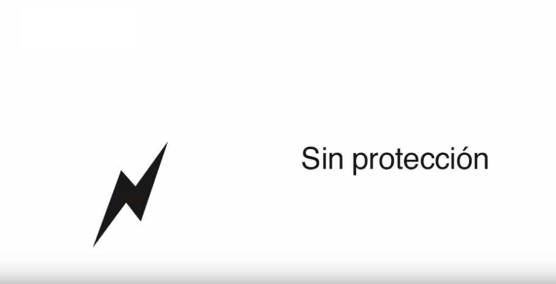
IP1X
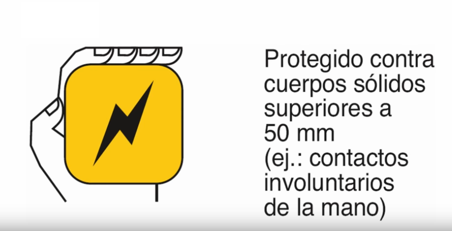
IP2X
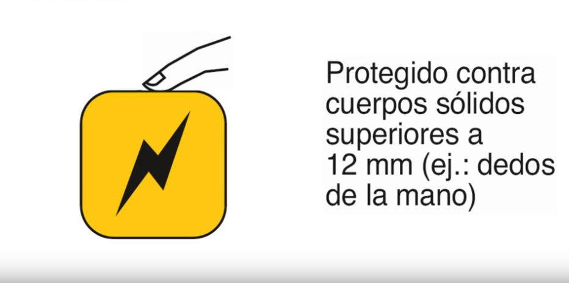
IP3X
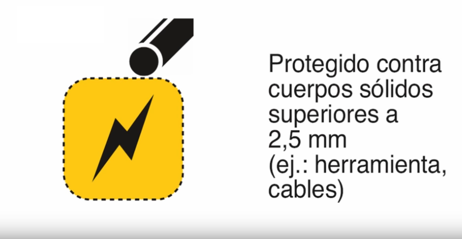
IP4X
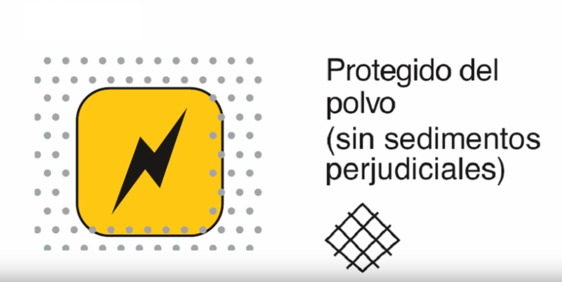
IP5X
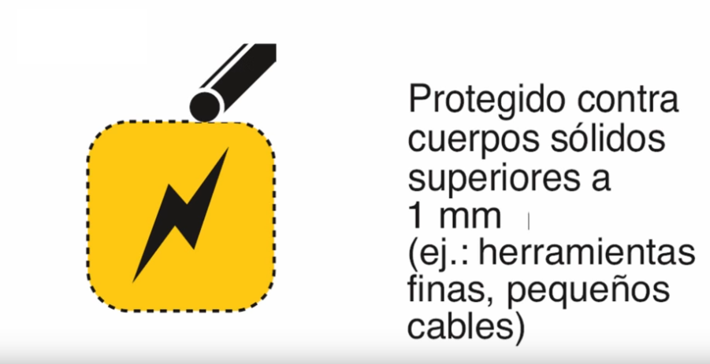
IP6X
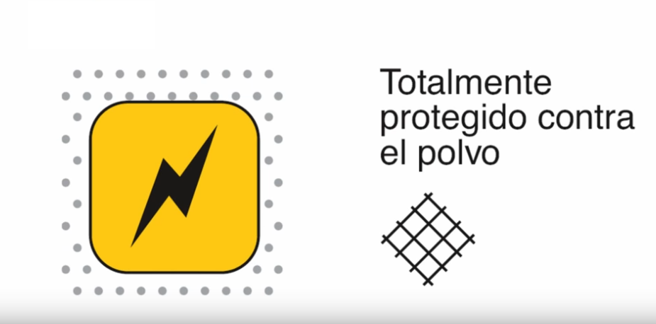
2ª Xifra CODI IP: Significat
IPX0
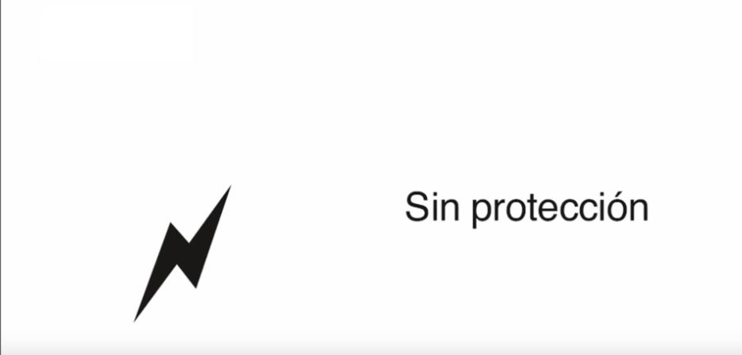
IPX1
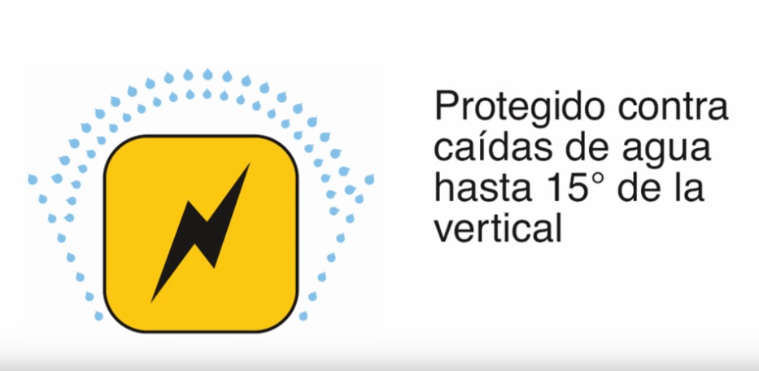
IPX2
IPX3
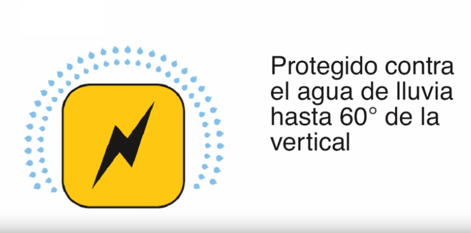
IPX4
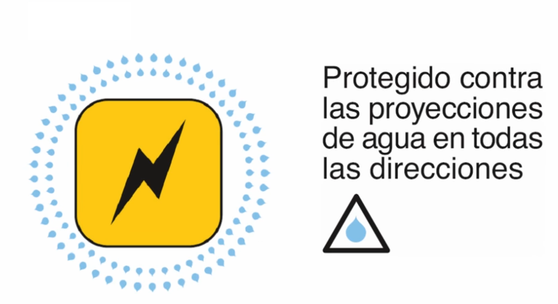
IPX5
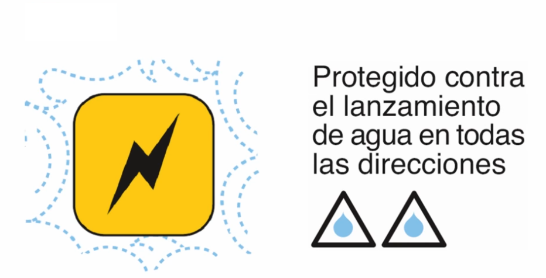
IPX6
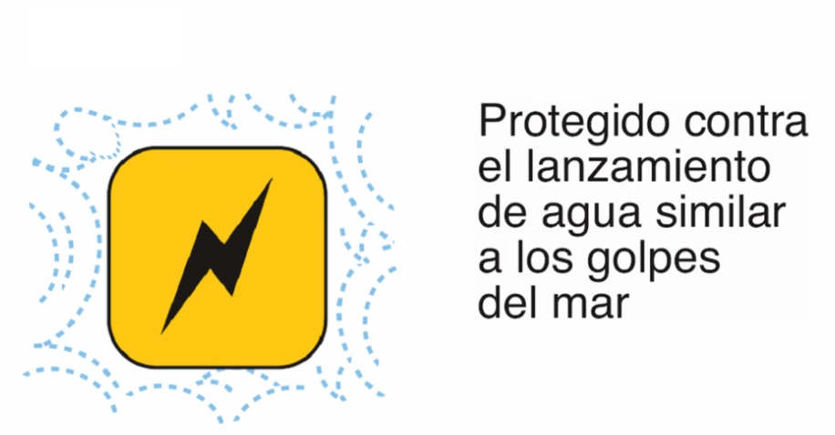
IPX7
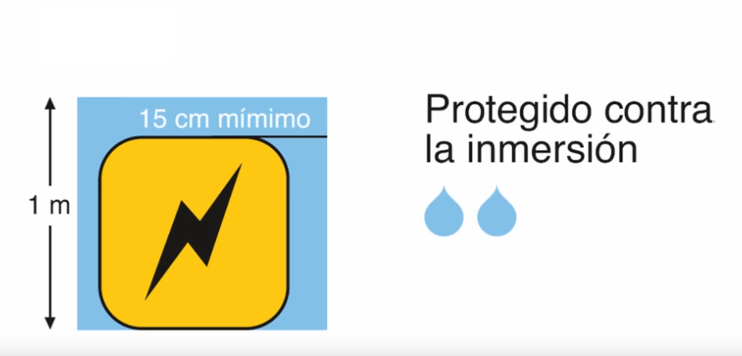
IPX8
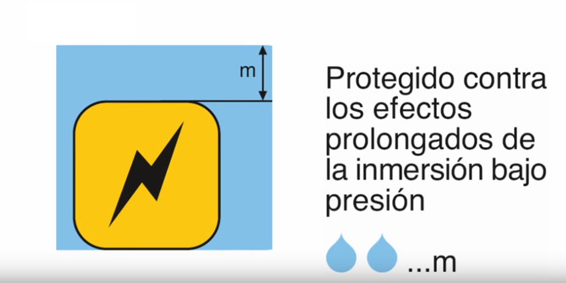